Release 1.0 (December 2003)
Author: James B. Marshall
marshall@cs.pomona.edu
This page provides information about the Metacat computer model of analogy-making and perception, including downloadable source code and instructions for running the program.
The definitive source of information about Metacat is my PhD dissertation, Metacat: A Self-Watching Cognitive Architecture for Analogy-Making and High-Level Perception, Department of Computer Science, Indiana University, Bloomington, 1999. Downloadable versions of the dissertation in PDF or gzipped PostScript format are available here:
A hardcopy version may be obtained by contacting Helga Keller at:
Center for Research on Concepts and Cognition
Indiana University
510 North Fess Street
Bloomington, IN 47408
(812) 855-6965
htkeller@indiana.edu
Metacat is a computer model of analogy-making and perception that builds on the foundations of an earlier model called Copycat. Copycat was originally developed by Douglas Hofstadter and Melanie Mitchell as part of a research program aimed at computationally modeling the fundamental mechanisms underlying human thought processes. Central to the philosophy of this research is the belief that the mind's ability to perceive connections between apparently dissimilar things, and to make analogies based on these connections, lies at the heart of intelligence. According to this view, to understand the analogical mechanisms of thinking and perception is to understand the source of the remarkable fluidity of the human mind, including its hidden wellsprings of creativity.
Like Copycat, Metacat operates in an idealized world of analogy problems involving short strings of letters. Although the program understands only a limited set of concepts about its letter-string world, its emergent processing mechanisms give it considerable flexibility in recognizing and applying these concepts in a wide variety of situations. The program's high-level behavior emerges in a bottom-up manner from the collective actions of many small nondeterministic processing agents (called codelets) working in parallel, in much the same way that an ant colony's high-level behavior emerges from the individual behaviors of the underlying ants, without any central executive directing the course of events.
Metacat focuses on the issue of self-watching: the ability of a system to perceive and respond to patterns that arise not only in its immediate perceptions of the world, but also in its own processing of those perceptions. Copycat lacked such an "introspective" capacity, and consequently lacked insight into how it arrived at its answers. It was unable to notice similarities between analogies, or to explain the differences between them (or why one analogy might be considered to be better or worse than another). In contrast, Metacat's self-watching mechanisms enable it to create much richer representations of analogies, allowing it to compare and contrast answers in an insightful way. Furthermore, it is able to recognize, remember, and recall patterns that occur in its own "train of thought" as it makes analogies. For instance, by monitoring its own processing, Metacat can often recognize when it has fallen into a repetitive cycle of behavior, enabling it to break out of its "rut" and try something else.
If you are interested in learning more about Copycat and Metacat, or other similar projects, the following publications and web sites are good places to start (in addition to downloading and trying out the code itself):
The Metacat source code is available as a gzipped tar file for Linux and Mac OS X or as a zip file for Windows from the links below, under the terms of the GNU General Public License.
To run Metacat, you will need the following software packages:
Petite Chez Scheme is an ANSI/IEEE-compliant implementation of the Scheme programming language. SWL is a windowing and graphics package based on Tcl/Tk that extends the capabilities of Petite Chez Scheme. To install SWL, you must first install Petite Chez Scheme and Tcl/Tk 8.3, if they are not already on your system. Versions of Tcl/Tk later than 8.3 should work fine also. All three packages are available for Linux, Macintosh, or Windows from the links below.
To install Scheme, run the following command as root:
rpm --install PetiteChezScheme-6.9b-2.i386.rpmThis will create the executable file /usr/bin/petite and place supporting files in /usr/lib/csv6.9b. It will also install the online documentation. If needed, install Tcl/Tk next by running the two commands below as root. (The commands "locate libtcl" and "locate libtk" can be used to find out what version of Tcl/Tk you have on your machine.)
rpm --install tcl-8.3.3-62.i386.rpm rpm --install tk-8.3.3-62.i386.rpmThis will place Tcl and Tk supporting files in /usr/lib, /usr/include, and /usr/bin. In general, to see a complete listing of all files to be installed, use
rpm --query --list --package <package-file>To install SWL, run
rpm --install SWL-0.9x-1.i386.rpmPackages can be uninstalled with the following command (where the package name is just the name of the package file minus the .i386.rpm extension):
rpm --erase <package-name>Debian users should be able to install the Linux RPMs using alien as shown below:
alien -cd PetiteChezScheme-6.9b-2.i386.rpm
To install Scheme, unpack pcsv6.9b-3.pkg.tar.gz and click on the pkg file. To install SWL, you must first install Tcl and Tk by unpacking tcl8.4.4.pkg.tar.gz and tk8.4.4.pkg.tar.gz and clicking on the pkg files. Then unpack swl0.9x-3.pkg.tar.gz and click on the pkg file.
Run pcsv69b.exe first to install Scheme, then swl09x69b.exe to install SWL and Tcl/Tk (accepting all of the defaults). Scheme, SWL, and Tcl/Tk can be uninstalled via the Add/Remove Programs option in the Windows control panel.
See the Chez Scheme 6.9b download page for further information.
Important: After untarring or unzipping the archive file, you should edit the configuration settings at the top of metacat.ss before running Metacat for the first time. The *metacat-directory* pathname should point to the directory containing the Metacat source code. The *file-dialog-directory* pathname specifies the default directory used when saving files with the Save commentary to file menu option.
Metacat uses a lot of memory. For best performance, at least 512MB of RAM is recommended, especially for some of the longer demo runs.
To start the program, do one of the following:
In Linux, cd to the Metacat subdirectory and type swl metacat.ss at the Linux prompt.
> (load "~/Desktop/Metacat/metacat.ss")
This will load all of the Metacat source code into Scheme/SWL. Next, type (setup) at the > prompt in the repl window to initialize all of Metacat's windows. These may be rearranged, resized, or iconified as desired. Closing a window hides it but does not destroy it (there are a few exceptions to this, however; see below). The following windows are created by Metacat:
Two other windows, labeled repl and Interaction window, are created automatically by SWL, and should not be closed. However, they can be iconified and ignored since they are not needed to run the program.
To quit Metacat, simply close the Control Panel window.
Most interaction with Metacat occurs through the Control Panel, shown below. (Note: the appearance of the graphics will be slightly different on non-Linux systems. For instance, in Mac OS X, the main menu bar is located at the top of the screen.) To run Metacat on an analogy problem such as abc -> cba; pqrs -> ?, type the problem into the Control Panel's input field as shown, and press Return. Punctuation is optional.
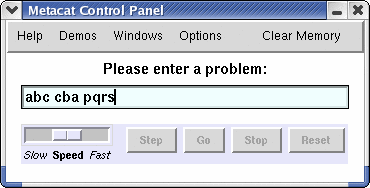
This will initialize the Workspace, Slipnet, and other program components accordingly. To begin the run, press Return again or click the Go button. In general, clicking Go is equivalent to pressing Return.
To interrupt execution, click Stop or click once anywhere in the Workspace window. Click Go or click on the Workspace again to resume execution. The Speed slider bar controls the speed of the graphics.
When Metacat finds a new answer, it stops running and displays the answer along with the Workspace structures (groups, bridges, rules, etc.) that gave rise to it. It also stores a description of the answer in its Episodic Memory. Continuing a run after an answer has been found may lead the program to discover other answers to the same problem. It may even discover an alternative way of producing some earlier answer based on a different interpretation of the letter-strings (i.e., by using a different rule to describe how the strings change). However, it will not reproduce an answer that is identical to one already in memory involving exactly the same letter-strings and rules.
The Step button single-steps program execution, where each step corresponds to running one codelet from the Coderack. After pressing Step, single-stepping may be continued by clicking directly on the Workspace window, until Go is pressed or the problem is reset. The default step size is one codelet, but this may be changed via the Step mode interval setting under the Control Panel Options menu. Program execution will be interrupted on every time step that is a multiple of the current step size setting.
It is also possible to specify a particular time at which to interrupt execution. This can be done via Set breakpoint under the Options menu. The breakpoint will remain in effect until it is cleared, which must be done manually using the Clear breakpoint menu option. It is not possible to set multiple breakpoints.
Since Metacat is nondeterministic, it may produce different results when run more than once on the same problem. The exact behavior of the program is determined by the seed value used to initialize the random number generator at the beginning of a run. The seed used for the current run appears in the upper right corner of the Control Panel. A particular seed value may be specified by including it after the letter-strings in the input field. For example, to run the above problem using the seed 123456, enter "abc cba pqrs 123456".
The Reset button resets the current run to the beginning, using the same seed value as before. Warning: resetting a run does not erase Metacat's Episodic Memory. If the program is rerun with the same seed after finding a new answer, it won't find that answer again, because it already exists in memory. To reproduce a run exactly, the state of the memory must be the same as it was at the beginning of the run.
To erase all answers from Metacat's memory, click Clear Memory on the Control Panel's main menu bar. (In Mac OS X, this option is located under the Options menu.)
The Windows menu makes it easy to hide and unhide Metacat's many windows, which can help to reduce screen clutter. To show or hide a window, choose the appropriate action from the menu. A window can also be hidden by closing it, usually by clicking on a small "X" in the corner of the frame. (Closing the repl, Interaction, or Control Panel windows, however, will destroy them, so don't do this.)
It is also possible to provide Metacat with an answer to a problem along with the problem itself. In this case, Metacat runs in answer justification mode, working backwards from the answer to try to discover why (or if) it makes sense. (See pages 49, 59-62, and 152-161 of the dissertation for an explanation of answer justification.) To provide an answer, simply include it as an extra letter-string when entering a problem in the Control Panel. For example, to specify sqrp as the answer to the earlier problem, enter "abc cba pqrs sqrp". As before, a seed value can be included after the letter-strings if desired, as in "abc cba pqrs sqrp 123456".
| 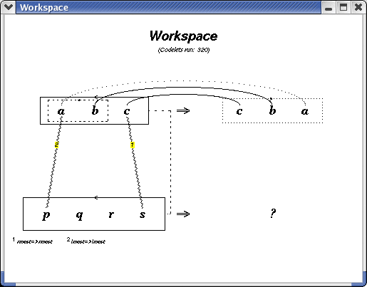 | 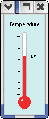 |
The Workspace window displays the activity of codelets as they propose, evaluate, build, and destroy structures (groups, bridges, rules, etc.) during a run. Newly-proposed structures are shown as dotted lines, evaluated structures as dashed lines, and built structures as solid lines (see the image above).
The Workspace temperature is an inverse measure of the amount and quality of built structures that currently exist in the Workspace, and is displayed in the Temperature window. At the beginning of a run, when no structures have yet been built, the temperature is very high (100 degrees). As the program builds up a more organized view of the letter-strings, temperature falls toward zero.
Besides serving as a measure of Workspace organization, temperature also controls the amount of randomness used by codelets in making decisions. At higher temperatures, codelet decisions are largely random; at lower temperatures they become much more deterministic. The net effect is that the program gradually moves from largely random, exploratory behavior at the outset of a run to largely deterministic, focused behavior near the end, as it discovers more relationships among the letter-strings.
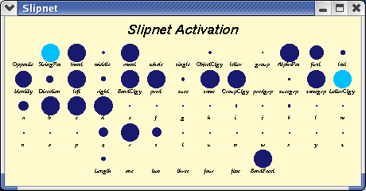
The Slipnet window shows the current activation of each Slipnet node (links between nodes are not shown). Each node corresponds to a particular concept that the program knows about the letter-string world. Some concepts start out highly activated at the beginning of a run, depending on the particular problem. In general, the more highly activated a concept is, the more influence it exerts on the nondeterministic decisions made by codelets in the Workspace. In turn, structure-building activity in the Workspace influences the amount of activation that concepts receive in the Slipnet.
Depending on the circumstances, concepts may be temporarily clamped by the program at full activation, which causes them to exert maximal influence over codelet activity. When a concept is clamped, its activation is shown in light blue, as in the example above.
If desired, the Slipnet display can be turned on or off by toggling the Slipnet graphics setting under the Control Panel Options menu. This can be useful for speeding up the graphics in the other windows.
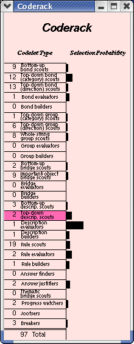
The Coderack holds the current pool of codelets waiting to run. On each time step, one codelet is chosen probabilistically from this pool, removed from the Coderack, and run. The Coderack window displays, for each codelet type, the number of codelets of that type currently in the pool and the relative probability that a codelet of that type will be chosen to run next (shown as a horizontal bar). Selection probabilities depend on the number of codelets of each type, the urgency values of each codelet (not shown), and the current Workspace temperature. In general, every codelet is assigned an urgency value at the time it gets created, with higher urgencies meaning a higher likelhood of being chosen to run. The most recent codelet type that ran is shown in dark pink.
For example, a typical Coderack state is shown to the left. Here the last codelet that ran was a Top-down description scout. The most likely type of codelet to run next is a Description evaluator, even though there is just one such codelet waiting. This is because its urgency value is much higher than that of the other codelets, even the combined urgencies of the 19 Rule scout codelets waiting to run.
If desired, the display of codelet counts (the numbers to the left of each
codelet type) in the Coderack window can be turned on or off by toggling the
Show codelet counts setting under the Control Panel Options menu.
Likewise, the last-codelet-type indicator can be turned on or off via the
Show last codelet type menu setting. Finally, the entire Coderack
display can be turned on or off by toggling the Coderack graphics menu
setting. This can be useful for speeding up the graphics in the other
windows.
Themes are structures that represent relationships between letter-strings at an abstract level. They play a key role in the descriptions created by Metacat of its answers to analogy problems, and serve as the basis for answer comparison. Themes reside in the Themespace, and are displayed in the three windows labeled Top Themes, Bottom Themes, and Vertical Themes. "Top", "bottom", or "vertical" refers to the particular string-mapping represented by a theme.
For example, the three top themes shown below represent properties of the horizontal abc -> cba mapping shown earlier in the top region of the Workspace window. The activation level of each theme is indicated by a green circle. In general, a theme whose activation level exceeds that of all other themes in its category by a sufficiently wide margin is called a dominant theme, and appears highlighted against a yellow background in the display. Themes can also be negatively activated, in which case they appear red instead of green.
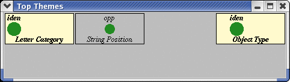
Like Slipnet concepts, themes can be temporarily clamped by the program at full activation, which causes them to exert strong top-down pressure on the activities of codelets in the Workspace, effectively channeling Metacat's behavior in particular directions. A set of clamped themes is indicated by a bright green background in the theme window. For example, with the top themes String Position: identity and Direction: identity clamped, the Top Themes window would appear as shown below. This would encourage Metacat to reperceive abc and cba as going in the same direction, with the leftmost letter of abc mapping to the leftmost letter of cba, and so on. (See sections 4.1 and 4.2 of the dissertation for a complete discussion of themes and the Themespace.)
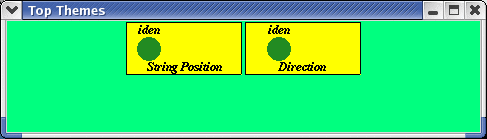
The Temporal Trace window shows a high-level record of the events that occur during a run. These events are monitored by codelets looking for patterns in the program's behavior. For example, several different types of events are shown below. These events include the building of the string-encompassing groups abc and pqrs, the activation of the Opposite concept in the Slipnet, the creation of a slippage between the concepts left and right, the creation of three different rules, and the clamping of a set of themes. (Section 4.4 of the dissertation describes the Temporal Trace in detail.)
An event can be examined more closely by clicking on its icon when the program is not running. Information about the event will be displayed in the Workspace window, and possibly other windows depending on the type of event. For example, clicking on one of the rule events shown below will display the rule along with the state of the Workspace at the time the rule was created. In addition, the concepts making up the rule will be displayed in the Slipnet window, and the themes associated with the rule will be displayed in the appropriate Theme window. Clicking on the event's icon again will restore the contents of the Workspace and the other windows.
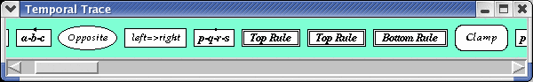
Metacat stores descriptions of problems and answers in its Episodic Memory. These descriptions contain the themes, rules, bridges, and other Workspace structures that gave rise to each answer, in addition to the letter-strings themselves. Each description appears as a labeled icon in the Episodic Memory window. For example, the left image below shows the contents of the memory after the program was run in answer justification mode on the answers srqp and sqrp for the earlier problem.
An answer can be displayed by clicking on its icon in the window. This will show the answer together with all of its supporting structures in the Workspace window, as well as the answer's associated themes in the Theme windows and its temperature in the Temperature window. Clicking on the icon again will restore the contents of the windows.
To have Metacat compare two answers stored in memory, simply click on the answers' icons in succession. The program will generate a summary in English of the similarities and differences that it sees, based on an analysis of the underlying themes and other structures stored in the answer descriptions. This summary appears in the Commentary window. For example, comparing the answers srqp and sqrp resulted in the commentary shown below. A few other messages generated during the sqrp run are also visible. (See section 4.7 of the dissertation for a detailed discussion of answer comparison and reminding).
| 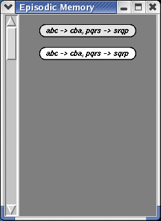 | 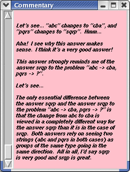 |
Whenever Metacat works on an analogy problem, it generates a running narrative of its "thoughts" in the Commentary window. The tone of this commentary can be controlled via the Eliza mode setting under the Control Panel Options menu. Turning Eliza mode off results in more neutral-sounding commentary (this is useful for the humor-impaired, or for those worried about the notorious "Eliza effect"). Toggling Eliza mode on or off causes all of the text currently in the Commentary window to be redisplayed in the new mode, but does not change the number of paragraphs. This makes it easy to see the corresponding "translation" of any part of the text. (See sections 4.6 and 4.7.4 of the dissertation for more information about Metacat's commentary-generating mechanisms.)
The Commentary window font can be changed via the Commentary font face and Commentary font size settings under the Control Panel Options menu. The Save commentary to file menu option can be used to save the current contents of the window to a text file.
The Verbose mode setting under the Options menu controls the printing of technical codelet messages in the Interaction window, and is unrelated to the generation of English commentary. These messages are useful for debugging, or for seeing what individual codelets are doing, but otherwise are not important. They do, however, slow down the program considerably, so turning Verbose mode on is not recommended.
The EEG window can be used to track the progression of numerical values such as temperature as they change over time. This can be useful in understanding the long-term behavior of parameters or other values during a run. By default, the EEG is configured to plot temperature and average Workspace activity (see below), but can easily be changed to track any desired values that fall within the range 0-100. See the file eeg-graphics.ss for more information. (The Workspace activity measure is described on pages 169-170 of the dissertation.)
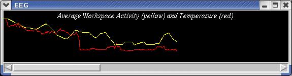
The sample runs of Metacat discussed in Chapter 5 of the dissertation are available under the Demos menu of the Control Panel. Selecting a demo will initialize the letter-strings and random number seed value appropriately. Click Go to begin the run. Many of these demos assume an initially empty memory, so it is a good idea to clear the memory before beginning each run.
This is not true, however, for the Answer comparison and reminding demos (discussed on pages 247-255 of Chapter 5). For example, to have Metacat compare the answers mrrkkk and mrrjjjj to the problem abc -> abd; mrrjjj -> ?, as shown at the bottom of page 249, first run the demos labeled "abc / mrrkkk" and "abc / mrrjjjj" in succession, without clearing the memory between runs. Then click on the icons for these answers in the Episodic Memory window in order to make the program compare them. The program's commentary will appear in the Commentary window.
A few other interesting runs, which were not discussed in the dissertation, are included in the Demos menu under Other sample runs. For instance, the first one (a long run of 7794 time steps) illustrates the program's ability to make sense of the answer mmmrrj to the problem abc -> cba; mrrjjj -> ?. This requires the program to see the lengths of the groups m and jjj in mrrjjj as getting swapped, rather than their positions or letter-categories (which would yield the answers jjjrrm and jrrmmm, respectively).
The second one asks Metacat to justify the answer abd to the problem abc -> abd; ijk -> ?. To do this, the program creates a rule describing both strings abc and ijk as changing their leftmost letter to a, their middle letter to b, and their rightmost letter to d, even though in abc's case the leftmost and middle letter "changes" are from a to a and b to b. Under normal circumstances the program would never perceive a letter as "changing" into itself, but given the context here, this idea makes perfect sense.
The last three examples demonstrate nondeterministic rule translation. In the first one, abc -> aabbcc; kkjjii -> ?, the program sees all letters in abc as increasing their lengths by one. The successor-predecessor symmetry between abc and kkjjii leads the program to decrease the lengths of the groups in kkjjii, yielding kji. Shortly thereafter, however, the program finds the answer kkkjjjiii by using the same rule as before, but this time ignoring the symmetry. (It also finds the answer kkjjii using a more literal-minded rule later.) In the next two examples, a -> b; z -> ? and abc -> abd; glz -> ?, Metacat notices the alphabetic symmetry between a and z (after hitting the z-snag multiple times, and answering b in the case of a -> b; z -> ?). The alphabetic symmetry causes a "coattail" slippage to occur between the symmetric concepts of successor and predecessor, yielding, respectively, the answers y and flz. (See section 3.4 of the dissertation for more information.)
Metacat uses the information in the Temporal Trace to monitor its own behavior, and can alter its behavior by clamping patterns of themes, concepts, or codelet types in response to this information. This gives the program a high degree of self-control. There are three main types of codelets responsible for monitoring the Temporal Trace and responding to clamped patterns: Progress watchers, Jootsers, and Thematic bridge scouts. These codelets, together with the top-down effects of clamped themes, are the principal mechanisms for self-watching in Metacat. (See section 4.5 of the dissertation for a full discussion of self-watching.)
If desired, these codelet types can be turned off, along with the top-down effects of themes, by toggling the Self-watching mode setting under the Control Panel Options menu. With self-watching off, all activity in the Themespace is suppressed, and no new Progress watcher, Jootser, or Thematic bridge scout codelets are allowed to run, although new events are still recorded in the Temporal Trace and newly-found answers are stored in memory as before. This feature makes it possible to explore how Metacat's self-watching mechanisms influence its behavior on particular problems.
It is also possible for the user to manually clamp patterns of themes and codelet types. To specify a theme pattern, choose Clamp theme pattern under the Control Panel Options menu, and then click on one or more Theme windows to select the themes to include in the pattern. When a Theme window is clicked, it will appear as shown below.
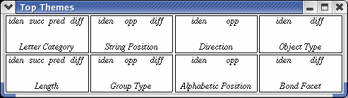
At this point, individual themes can be specified by left- or right-clicking on their names. Left-clicking selects maximum positive activation (green), and right-clicking selects maximum negative activation (red). On a Macintosh, Shift-clicking is equivalent to right-clicking. Clicking on an already-selected theme removes it from the pattern. When the desired theme pattern has been created, click the Clamp Themes button in the yellow confirmation dialog (not shown here) to clamp the pattern. A corresponding clamp event will appear in the Temporal Trace. The clamped pattern will remain in effect until undone by the program in the normal fashion at a later time, or until the user manually unclamps it.
To undo a clamp manually, select Undo last clamp from the Control Panel Options menu. This will undo the most recent clamp event in the Temporal Trace (whether created by the program or user), assuming that one is still in effect.
In addition to theme patterns, codelet patterns can also be clamped manually. A predefined set of codelet patterns is available under the Clamp codelet pattern submenu. Clamping a codelet pattern temporarily imposes a set of urgencies on the Coderack that overrides the urgencies of individual codelets. This enhances the likelihood that certain types of codelets will run, which may in turn encourage the program to focus on building specific types of structures, such as rules.
For example, a codelet pattern that promotes the discovery of new rules is shown below on the left. This pattern enhances the urgencies of all Rule scout, Rule evaluator, and Rule builder codelets, while suppressing the urgencies of all other codelet types (urgencies are indicated by shades of grey, with lighter shades corresponding to higher urgencies). On the other hand, the pattern shown on the right encourages the creation of new Workspace structures of any type, by enhancing the urgencies of all bottom-up scout codelets and, to an even greater degree, all evaluator and builder codelets. Top-down codelet types are not affected. Note that these two examples involve exactly the same pool of codelets in the Coderack. The only difference is the codelet pattern clamped, which results in a very different profile of selection probabilities in each case.
| 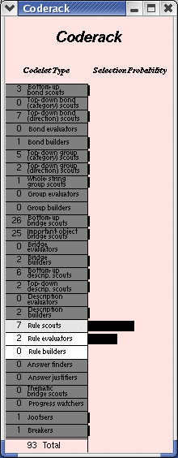 | 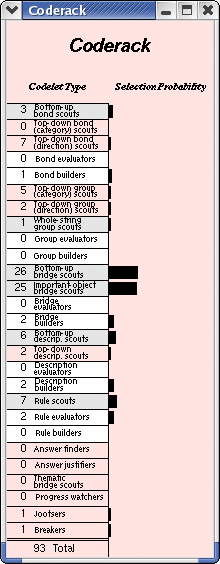 |
Send bug reports or other feedback to marshall@cs.pomona.edu. If the program crashes on a particular run, please make sure to indicate the exact letter-strings and random number seed value, as well as the state of the Episodic Memory at the beginning of the run. Thanks!